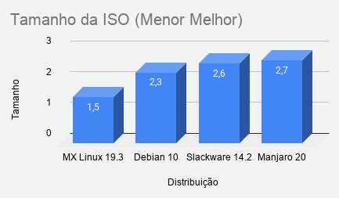
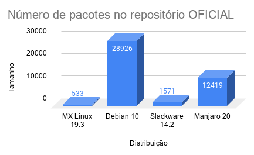
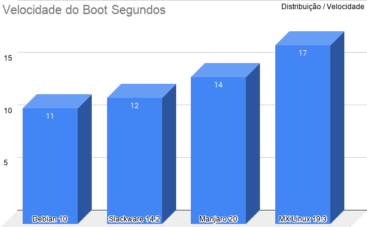
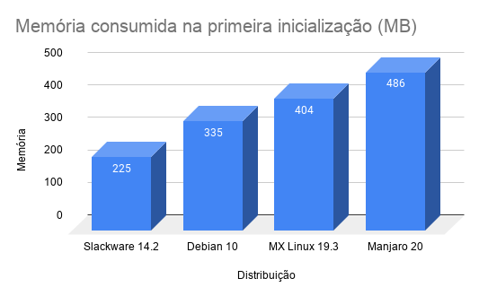

Benchmark de quatro distribuições GNU/Linux
Após alguns debates em um canal de GNU/Linux sobre em "Qual distribuição GNU/Linux o XFCE inicia mais leve" eu resolvi fazer alguns testes e comparações. Após verificar qual de 4 distribuições nas suas versões estáveis tinha uma perfomance melhor do XFCE eu acabei realizando mais testes para passar o meu tempo tedioso de sábado.
As distribuições que eu usei para os teste foram: MX Linux 19.3, Debian 10, Slackware 14.2 e Manjaro 20. E os teste que realizei foram:
- Tamanho da ISO
- Número de pacotes (BRUTO) no repositório
- Versão do Kernel Linux
- Facilidade de instalação
- Velocidade do boot
- Memória consumida na segunda inicialização do Sistema.
- Velocidade do espelho padrão ao instalar pacote (GIMP)
- Tamanho do sistema instalado na RAIZ
Você deve estar se perguntando por que eu usei estas distribuições neste momento correto? Bom o Slackware é meu sistema padrão do dia a dia, então precisava estar nesta lista, de resto eu escolhi pela questão do INIT e por que acompanho as mesmas faz um bom tempo... Então temos O slackware com o init padrão BSD, o Debian e Manjaro com Systemd e o MX Linux com SystemV.
Todas distribuições seguem o mesmo padrão estão na versão ESTÁVEL, estão com XFCE por padrão e está tudo no modo VANILLA, nada foi modificado. Os testes foram realizado virtualizados com o qemu com kvm e as seguintes especificações foram usadas: 4GB de ram, 2 núcleos. Na máquina real estou usando um SSD de 128 GB Lexar.
Lembrando que virtualização não chega nem aos pés de uma máquina fisica, o desempenho não é o mesmo... Porém conseguimos ter uma noção do que rolou.
Tamanho da ISO
O tamanho da iso foi o nosso primeiro teste, todas estão com quase o mesmo tamanho... Nada me surpreendeu aqui, se tratando de 2021 estas estão com um tamanho razoável. Estamos fazendo a contagem em Gigabytes.
Começamos com o MX Linux 19.3 pegando 1.5 GB, Debian 10 segue com 2.3 GB, Slackware 14.2 2.6 GB e o mais pesado Manjaro 20 com 2.7 GB.
Ponto: MX Linux 19.3
Número de pacotes BRUTOS no repositório oficial
O Debian sai disparado na frente de todos! Sem dúvida é a distribuição que mais tem softwares empacotados no mundo Linux. Com seus 28 MIL 926 pacotes. Seguindo do Manjaro com 12 Mil 419 pacotes, Slackware 14.2 com Mil 571 pacotes e o MX Linux com apenas 533 pacotes.
Ponto: Debian 10
Versão mais recente do Kernel Linux
Nesta parte eu gosto de usar kernels mais antigos já que as distribuições que gostam de usar kernels do Linux que são LTS e recebem patches de segurança regularmente (quando necessário)! Mas o teste era para pegar o kernel mais recente para ter suporte total a hardwares mais novos.
O manjaro por ser baseado no Arch linux leva uma enorme vantagem nesta parte! Mesmo sendo a versão Estável tem um kernel bem recente... Ou seja, suporte total a máquinas mais recentes. Dentro do que é aceito pelo Linux claro.
- Slackware 14.2: Kernel 4.4
- Debian 10 : Kernel 4.19
- MX Linux 19.3 : Kernel 4.19
- Manjaro 20 : Kernel 5.9.16
Ponto: Manjaro 20
Pontuação de facilidade de Instalação
Aqui utilizei a pontuação e bom senso dos meus 16 anos como usuário de GNU/Linux, o Debian e Manjaro levaram a melhor por usar o instalador calamares. O mesmo é bem direto ao ponto, intuitivo e fácil de ser utilizado! Ficou no empate... Se fosse para dar um pontinho a mais seria pelo molde que o manjaro botou em seu instalador calamares o qual ficou mais bonito que do Debian.
O MX Linux tem um instalador gráfico tambem mas é muito confuso já o instalador do Slackware não é gráfico mas é direto ao ponto e fácil de entender com suas telinhas de Dialog. Por isso ganharam o mesmo ponto.
- Slackware 14.2 : 4/10
- MX Linux 19.3 : 4/10
- Debian 10 : 7/10
- Manjaro 20 : 7/10
Ponto: Manjaro 20 e Debian 10
Velocidade do boot até Login
Aqui meu SSD fez toda diferença em tudo! O que era lento ganhou mais gás e o que era rápido continuou rápido sem muito ganho significativo. O Slackware com seu Init baseado nos BSD's ficou pau a pau com o SystemD do Debian.
Lembrando que o Init do Slackware assim como o SystemV do MX Linux não carregam em paralelo os serviços na inicialização. Já o SystemD já o faz. Por isso o Systemd é bem ágil quando se trata de inicialização. Temos a parte de serviços! Quanto mais serviços para carregar mais lento será o boot! O MX Linux foi o pior nesta parte carregando o sistema até o login em 17 segundos.
Ponto: Debian 10
Memória consumida na primeira inicialização
Assim como eu já suspeitava o Slackware se mostrou que tem o ambiente XFCE mais leve de todos! Então se você necessita de um xfce bem leve já sabe o que escolher.
Ponto: Slackware 14.2
Velocidade do espelho (Instalação GIMP)
Para fazer um teste do espelho mais próximo fiz a instalação do GIMP 3x em cada distribuição de teste. O tempo melhor foi utilizado para fazer a comparação. A internet de teste é de 200MB, 200 mb download e 50 Upload. Estou no Paraná. Lembrando que os espelhos estão setados para trabalhar aqui no Brasil!
- Manjaro 20 : 5 Segundos
- Debian 10 : 6 Segundos
- MX Linux 19.3 : 16 Segundos
- Slackware 14.2 : 55 Segundos
O espelho do MX Linux aqui no Brasil é da amazonia! Pingando o acesso é de 96~100 MS, quase como se fosse um espelho de fora do pais! Teve um desempenho horrivel, mas o que mais foi horrivel foi do Slackware com seus 55 Segundos para baixar e instalar o GIMP. O espelho do Slackware é de São Paulo.
O espelho do Manjaro e Debian é do Paraná.
Ponto: Manjaro 20
Tamanho do Sistema instalado.
Apesar de não me preocupar tanto com tamanho de sistema instalado, já que nos tempos atuais HDS/SSDS e outros dispositivos são BARATOS eu fiz o teste por que sei que muita gente ainda vê o tamanho final como um problema.
Os sistemas não tiveram tanta diferença assim em tamanho, apesar do Debian ter uma ISO menor que o inchaço da iso do Manjaro o mesmo teve o final melhor.
Ponto: MX Linux
Pontuação Final
Considerando a data de lançamento das distribuições como Debian 10 em 2019, do manjaro 20 em 2020, do MX Linux 19.3 em 2020.O Slackware 14.2 levou uma desigualdade neste teste por ter sido lançado a versão estável em 2016. Ou seja, o Kernel por exemplo já está bem desatualizado em comparação com outros concorrentes. Mas isso o torna ótimo para servidores.
Se fossemos comparar as mesmas distribuições em sua versão "em desenvolvimento" daria uma competição mais acirrada e o resultado poderia mudar totalmente da água para o vinho. Mas fiquem com o resultado.
Pontuação: Slackware 14.2 : 1 ponto MX Linux 19.3 : 2 pontos Manjaro 20 : 3 pontos Debian 10 : 3 pontos